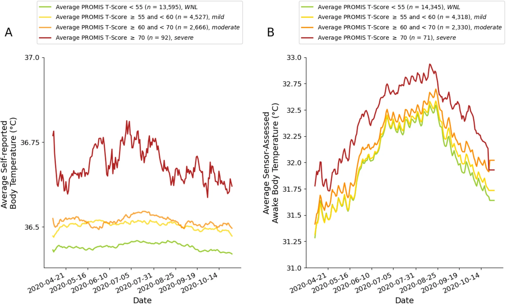

Average self-reported body temperature (A) and average wearable sensor-assessed distal body temperature (B) plotted by PROMIS depression symptom T-score categories. Figure panels show that individuals with PROMIS depression symptom T-scores within normal limits (WNL; green) have the lowest average self-reported and wearable sensor-assessed distal body temperatures, with increasing average self-reported and wearable sensor-assessed distal body temperatures among individuals in the mild (yellow), moderate (orange), and severe (red) PROMIS depression symptom T-score categories. Note. We took the self-reported body temperature data from each calendar day (Panel A; most frequently reported by participants in the morning) and the average of any available wearable sensor-assessed distal body temperature data from each calendar day (during awake time; Panel B) and plotted those average values for the different depression groups. We smoothed average self-reported and wearable sensor-assessed body temperatures (°C) using an exponentially weighted moving average with a 7-day window before and after each timepoint as a function of the average NIH PROMIS Adult Health Profile instrument for depression (Form 4a) score.